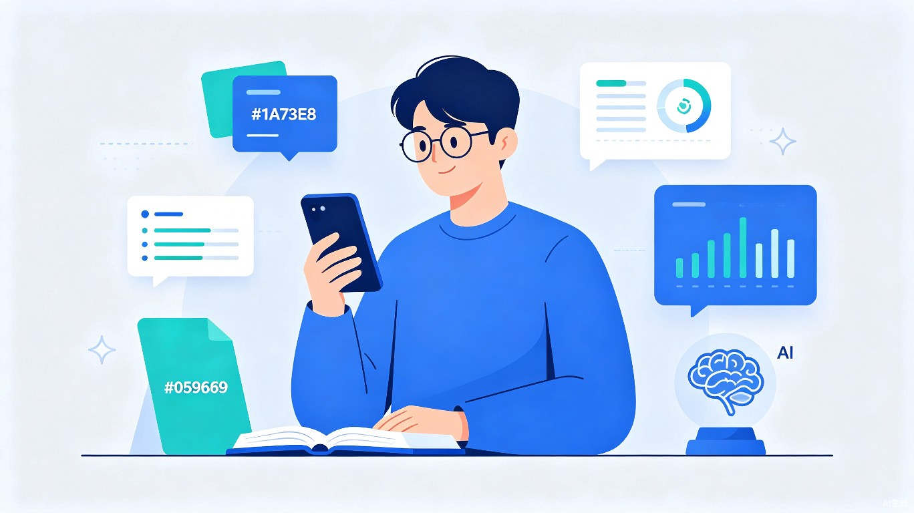
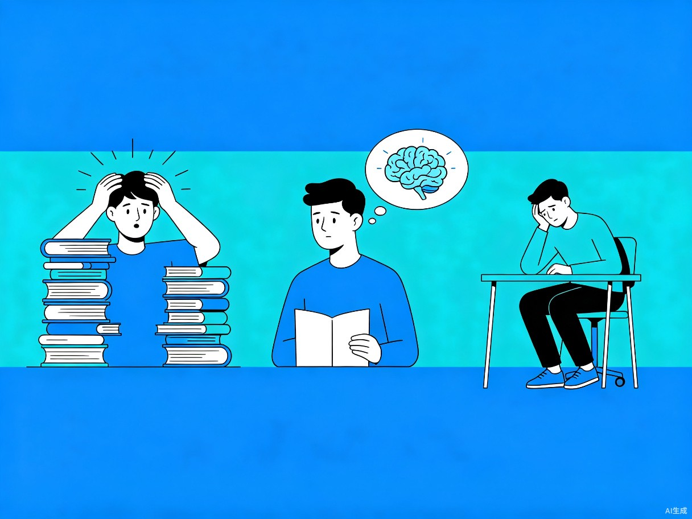
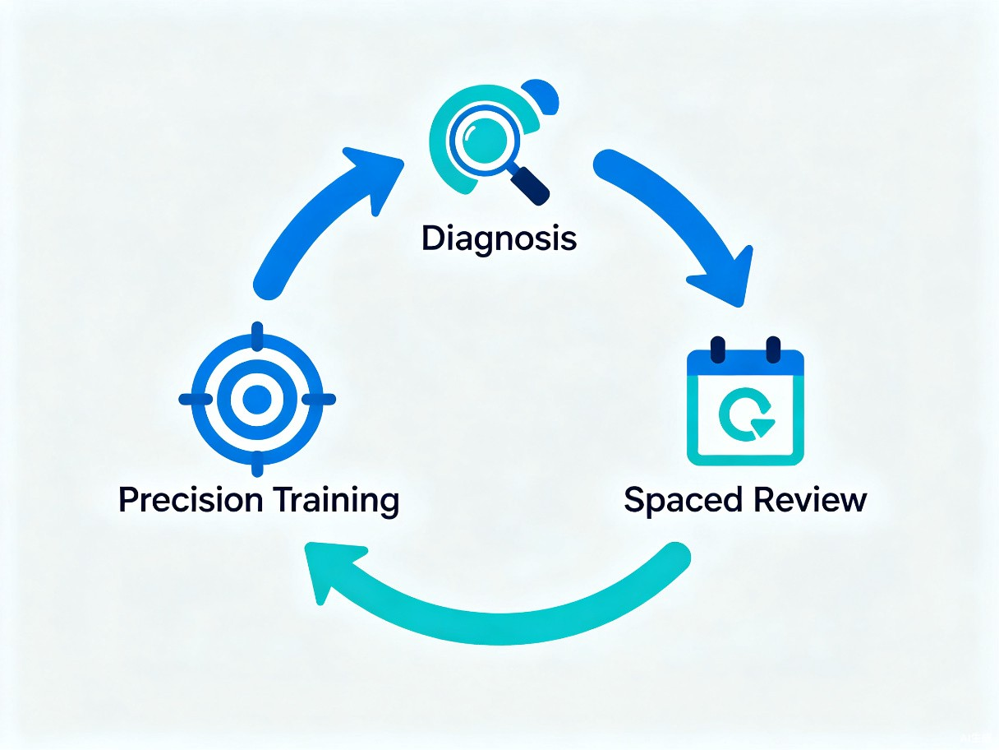

1
创意名称 + 创意介绍

想解决什么问题
自考生资料堆积如山却抓不住重点；白天上班晚上学习，没有系统复习机制导致"学了就忘"；一个人备考缺乏监督，拖延到考前直接放弃。市面上的网课完课率不足20%，题库App又只能盲目刷题，都没真正解决"不知道考什么"和"坚持不下去"的问题。
为什么会想到做这个
自考群体每年超千万人次，其中70%是在职人员，他们极度缺乏高效的学习工具。AI大模型具备理解教材、提炼考点、生成习题的能力，正好可以解决传统备考模式的效率问题。
大概是什么产品
微信小程序——兼顾流量获取与使用便捷性，让考生随时随地打开就能练。
2
目标用户及痛点
面向哪些用户
25-40岁在职自考生，工作繁忙，学习时间碎片化，希望用最少时间通过考试。
在什么场景下使用
下班后到家或通勤路上，每天利用1-2小时碎片时间进行备考练习。
当前痛点
不知道怎么学
资料太多，无人指导，抓不住重点
学了记不住
学完一章忘一章，临近考试发现全忘了
坚持不下去
一个人备考缺乏监督，拖延到考前直接放弃

3
价值与意义
S 社会价值
自考是很多人提升学历、改变职业轨迹的重要途径。本产品帮助考生用更少时间通过考试，降低"因信息不对称而放弃"的情况，让更多人有机会获得高等教育学历。
E 效率提升
用AI代替人工筛选考点，把传统"看视频→找重点→刷题"的低效流程，压缩为"诊断→精准训练→间隔复习"的高效闭环，帮助考生将有限学习时间用在刀刃上。
看视频
→
找重点
→
刷题
（传统低效流程）
诊断
→
精准训练
→
间隔复习
（AI高效闭环）

4
产品核心机制
内容来源
产品定位为"AI提炼工具"而非内容平台，规避版权风险。内置1-2个热门专业的官方考纲框架，用户上传自己的教材后，AI只需做"章节对齐"和"内容填充"，首次处理控制在30秒内，支持异步处理无需等待。
坚持机制
- 企业微信私域为核心触达通道，每日推送学习提醒、进度报告和考前冲刺通知
- 虚拟积分质押打卡：用户通过学习行为赚取积分，用积分参与契约打卡，利用"损失厌恶"心理驱动坚持，完全规避资金合规风险
- 学习排行榜增强社群动力
准确性保障
AI生成答案附带置信度标注，支持答案溯源和用户纠错反馈，建立内容质量闭环，持续优化考点提炼准确率。
商业模式
Freemium模式（免费基础功能 + Pro订阅解锁高级功能），结合虚拟积分体系逐步变现。